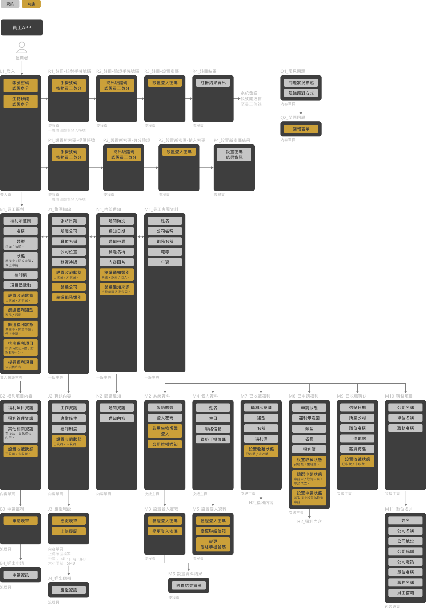
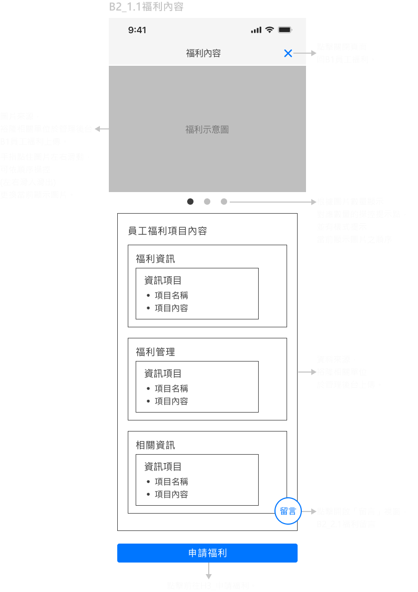
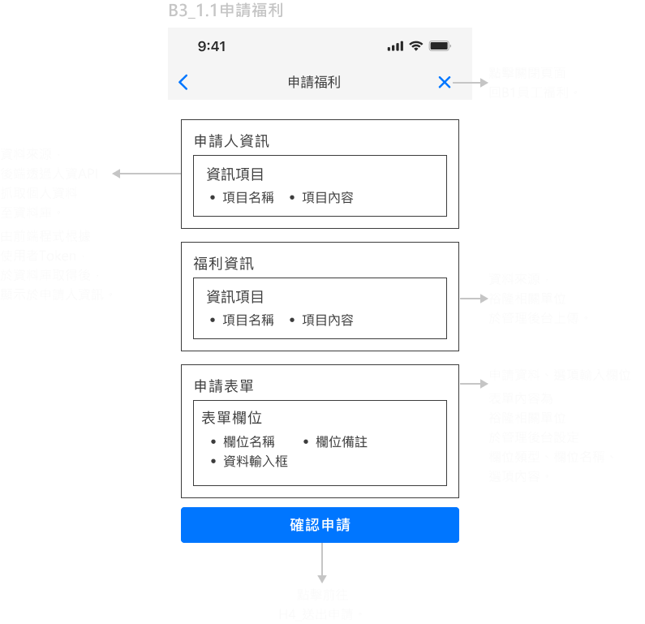
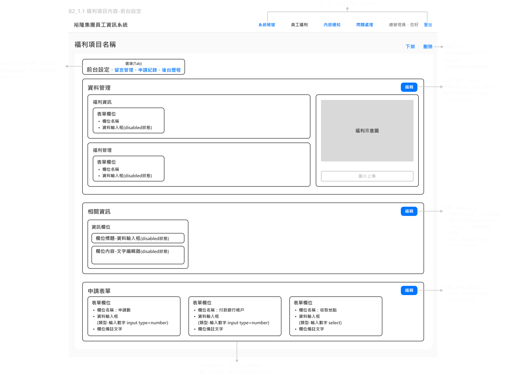

員工APP和後台 規劃內容
回作品集
前言
集團總管理處想要
訪談裕隆相關單位，了解現有業務流程和表單文件，進行產品使用流程和功能規劃。
- 加強對子公司布達資訊之效率。
- 取代員工以內部信箱申請福利商品、活動的方式
- 優化審核員工申請福利之流程。
一、定義產品核心
除了完成產品需求目標外，定義和強化使用價值，減少無效開發之風險。
產品理念：
幫助集團與員工更加貼近、相互契合，讓員工APP成為集團營運的一股助力。
營運價值：
- 透過員工福利(品牌商品、娛樂活動、團購...等)，使集團融於員工生活強化認同感。
- 藉由APP直接傳達集團訊息至員工手機，取代總管理處→各公司管理處→部門主管→員工的傳達方式，優化布達速度和確定性。
- 再利用「員工申請福利」功能模組，增設「申請集團職缺」，優化集團人才資源存留和獲取，分化產品開發成本、增加使用價值。
- 收集不具個別員工識別的使用數據(如：內部訊息點擊率、員工福利項目申請率)，了解員工偏好，提供員工政策之參考，間接確保良好的員工體驗。
二、盤點資料項目
三、規劃互動機制
四、釐清資料來源、內容項目和互動機制
員工：
員工
可以註冊為APP(前台)的使用者。
須核對員工手機號碼→手機驗證碼認證員工身分→登入密碼設定→系統寄送信件於員工信箱→員工於信件中點擊帳號開通連結。
使用者：
使用者
可以擔任APP管理後台的總管理員。
由後端資料庫設置。
可以擔任APP管理後台的管理員。
由總管理員於管理後台設置。
員
工
福
利
工
福
利
員工福利 資料來源：
建立管理後台，由裕隆相關單位於管理後台上傳至資料庫，
前端程式於資料庫取得後，顯示於APP(前台)頁面。
前端程式於資料庫取得後，顯示於APP(前台)頁面。
內容項目：
前台設定：
福利項目資訊
類型：商品 / 活動
名稱：LUXGEN URX NEO 5人大生活家庭版
福利示意圖：aaa.png
福利單位：台
市價：700,000元
福利價：620,000元
福利管理資訊
(隱性)管理編號：AA1234
新增時間：2023.10.01 00:00
申請開始時間：2023.10.01 00:00
申請結束時間：2023.10.15 00:00
管理狀態：上架 / 下架 / 刪除
架上狀態：準備中 / 開放申請 / 停止申請
申請年資：3年以上
申請職等：12職等以上
申請數限制：小於等於1
備註：--
相關資訊欄位
欄位名稱：商品詳情
欄位內容：5門5人座、油耗平均12km/ltr...
申請表單欄位
輸入類型：輸入文字 / 輸入數字 / 下拉選單 / 複選選項 / 單選選項
排序：1
欄位名稱：申請數
欄位輸入提示：請輸入數字
欄位選項：--
欄位備註：每人限定數量1台
留言資訊
留言時間：2023.10.10 14:00
留言員工編號：AB12650
留言員工姓名：黃可欣
留言內容：您好，想請問申請之後離職，福利還有...
留言區設置：開啟 / 關閉
後台歷程
操作者姓名：黃可欣
操作者員工編號：AB12650
時間：2023.10.10 14:20
資料範圍：
福利項目 / 前台設定 / 留言資訊 / 申請紀錄
資料主題：資料設定
資料項目：福利價
資料內容：$620,000
動作：編輯 / 新增 / 刪除 / 上架 / 下架
(隱性)刪除者姓名：黃可欣
(隱性)刪除者員工編號：AB12650
(隱性)刪除福利時間：2023.10.18
前台操作資訊
員工點擊數：527
員工收藏數：252
員工申請數：252
APP(前台)操作機制：
使用者
可以查看員工福利資料(前台設定)
限於管理狀態為「上架」的員工福利項目。
於APP(前台)根據申請開啟時間，由近至遠排序員工福利項目。
於APP(前台)設置項目排序、篩選類別、搜尋名稱功能。
於APP(前台)根據申請開啟時間，由近至遠排序員工福利項目。
於APP(前台)設置項目排序、篩選類別、搜尋名稱功能。
可以查看、發表留言(留言管理)
限於管理狀態為「上架」的員工福利項目。
限於留言功能為「開啟」的員工福利項目。
可以刪除、編輯使用者自己留言的內容文字。
限於留言功能為「開啟」的員工福利項目。
可以刪除、編輯使用者自己留言的內容文字。
可以申請員工福利(申請表單)
限於管理狀態為「上架」的員工福利項目。
須符合福利管理的「申請年資限制」、「申請職等限制」、「申請數量限制」。
須符合福利管理的「申請年資限制」、「申請職等限制」、「申請數量限制」。
可以查看員工福利項目的點擊數(前台操作資訊)
限於管理狀態為「上架」的員工福利項目。
管理後台操作機制：
管理員
可以管理員工福利資料(前台設定)
新增、編輯、刪除員工福利資料。
刪除員工福利資料，須輸入權限密碼。
刪除員工福利資料，須輸入權限密碼。
可以查看、回覆、隱藏員工福利中的留言(留言管理)
限於留言功能為「開啟」的員工福利項目。
可以刪除、編輯管理者自己回覆的內容文字。
可以刪除、編輯管理者自己回覆的內容文字。
可以查看員工福利資料的操作動作(後台歷程)
可以查看員工福利項目的點擊數、收藏數、申請數(前台操作資訊)
集
團
職
缺
團
職
缺
內部職缺 資料來源：
裕隆相關單位提供人資系統API，由後端透過API抓取至資料庫，
前端程式於資料庫取得後，顯示於APP(前台)頁面。
前端程式於資料庫取得後，顯示於APP(前台)頁面。
內容項目：
管理資訊
發布日期：11.07
工作資訊
所屬公司：裕隆建設有限公司
公司地址：新北市新店區中興路三段三號四樓
職位類別：電氣機械
職位名稱：機電工程師
時段：日班
工作範圍：工地現場施工監督、進度管理及施工界面整合協調作業...。
薪資待遇：面議
應徵條件
工作經驗：5年以上
學歷：專科、大學以上
科系：不拘
語文：中文
技能：AutoCAD
駕照：普通重型機車、普通小型車
其他：具水電空調工程規劃能力者尤佳
福利制度
休假：週休二日、陪產假、生理假、育嬰假。
獎金：三節獎金、績效獎金、結婚禮金、生育津貼。
其他：員工本人及配偶/子女免費加保「團體保險」、員工健康檢查。
使用者操作機制：
使用者
可以查看集團職缺
於APP(前台)根據發布日期，由近至遠排序集團職缺項目。
於APP(前台)設置篩選職位類別、篩選所屬公司、搜尋職位名稱功能。
於APP(前台)設置篩選職位類別、篩選所屬公司、搜尋職位名稱功能。
可以應徵集團職缺
有兩種應徵模式：員工本人應徵和員工親友應徵。
使用者於APP(前台)將應徵表單資料上傳資料庫，由後端程式以電子郵件發送至裕隆人資信箱。
使用者於APP(前台)將應徵表單資料上傳資料庫，由後端程式以電子郵件發送至裕隆人資信箱。
內
部
訊
息
部
訊
息
通知訊息 資料來源：
1.由前端於管理後台紀錄上傳資料庫之日期存至資料庫，作為管理資料的通知日期。
2.建立管理後台，由裕隆相關單位於管理後台上傳管理資料、訊息資訊至資料庫。
前端程式於資料庫取得後，，顯示於APP(前台)頁面。
2.建立管理後台，由裕隆相關單位於管理後台上傳管理資料、訊息資訊至資料庫。
前端程式於資料庫取得後，，顯示於APP(前台)頁面。
內容項目：
訊息資訊
通知日期：2023.07.10
訊息類別：集團消息 / 系統維運 / 個人通知
訊息來源：(裕隆集團各家公司名稱)
訊息內容
標題名稱：員工福利商品LUXGEN URX NEO 福利價620,000元
內容文字：感謝集團員工長久以來的辛勞，董事會決定提供30台於今年上市的...。
內容圖片：XXX.png
前台操作資訊
員工閱讀數：352
操作機制：
使用者
可以查看內部訊息
於APP(前台)根據通知日期，由近至遠排序內部訊息項目。
於APP(前台)設置篩選訊息類別、篩選訊息來源功能。
於APP(前台)設置篩選訊息類別、篩選訊息來源功能。
管理員
可以管理內部訊息
新增、刪除內部訊息資料，因有手機推播通知，機制上不作後台編輯功能。
可以查看員工閱讀數
各員工於APP(前台)點擊內部訊息項目，該項目計算1次閱讀數(重複點擊不計)。
員工
專屬
資料
專屬
資料
員工專屬資料 資料來源：
1.裕隆相關單位提供人資系統API，由後端透過API抓取個人資料、職務資料至資料庫。
2.前端抓取使用者於APP(前台)操作的系統資料、申請福利、收藏福利存於資料庫。
前端程式根據使用者Token，於資料庫取得後，顯示於APP(前台)頁面。
2.前端抓取使用者於APP(前台)操作的系統資料、申請福利、收藏福利存於資料庫。
前端程式根據使用者Token，於資料庫取得後，顯示於APP(前台)頁面。
內容項目：
個人資料
姓名：陳大華
生日：1972.08.22
手機號碼：0912345678
員工資料
員工編號：AB13750
職等：12等
年資：5年6個月
員工信箱：abc123@yulon.com
職務資料
*會有數量不定、多項職務的情況
*會有數量不定、多項職務的情況
公司名稱：裕隆經管企業股份有限公司
公司地址：新北市新店區中興路三段3號
公司電話：02-2255333
公司統編：25099079
單位名稱：總管理處數位發展部
系統資料
系統帳號：0912345678
登入密碼：********
啟用生物辨識登入：是 / 否
啟用推播通知：是 / 否
申請福利
*申請失敗和申請成立之福利，於半年後(暫定)後，系統自動刪除資料
*申請失敗和申請成立之福利，於半年後(暫定)後，系統自動刪除資料
福利資料：資料來源於員工福利
類型：商品
名稱：LUXGEN URX NEO 5人大生活家庭版
單位：每台
市價：700,000元
福利價：620,000元
申請資料：
申請狀態：申請中 / 取消申請 / 申請成立
申請人姓名：林慧倩
申請人員工編號：AB12345
聯絡手機：0912345678
申請時間：2023.10.10 14:20
申請數：1
銀行帳戶號碼：0000222200002222
收取地址：裕隆經管企業股份有限公司-新北市新店區中興路三段3號
金額：$620,000
(後台設定-申請表單欄位名稱)：(前台申請-輸入內容)
收藏福利
收藏狀態：已收藏
福利資料：資料來源於員工福利
類型：商品
名稱：LUXGEN URX NEO 5人大生活家庭版
單位：每台
市價：700,000元
福利價：620,000元
收藏職缺
收藏狀態：已收藏
職缺資料：資料來源於集團職缺
所屬公司：裕隆建設有限公司
職位名稱：機電工程師
工作地點：新北市新店區
薪資待遇：面議
使用者操作機制：
使用者
可以查看員工專屬資料。
可以設置員工專屬資料。
設置個人資料的手機號碼、信箱帳號。
設置系統資料的登入密碼、是否啟用生物辨識、是否啟用推播通知。
新增、刪除收藏福利資料。
設置系統資料的登入密碼、是否啟用生物辨識、是否啟用推播通知。
新增、刪除收藏福利資料。
後
台
資
料
台
資
料
後台資料 資料來源：
1.裕隆相關單位提供人資系統API，由後端透過API抓取員工編號、姓名至資料庫。
2.裕隆相關單位於管理後台上傳管理項目至資料庫。
3.由後端資料庫設置管理位階、後台登入密碼、刪除權限密碼。
除後台登入密碼、刪除權限密碼，前端程式於資料庫取得後，顯示於管理後台頁面。
2.裕隆相關單位於管理後台上傳管理項目至資料庫。
3.由後端資料庫設置管理位階、後台登入密碼、刪除權限密碼。
除後台登入密碼、刪除權限密碼，前端程式於資料庫取得後，顯示於管理後台頁面。
內容項目：
管理員資訊
員工編號：AB12650
姓名：黃可欣
管理位階：總管理員 / 管理員
管理權限狀態：開啟 / 關閉
管理項目：系統帳號 / 員工福利 / 內部訊息 / 問題回報
權限資料
後台登入密碼：******
刪除權限密碼：******
問題回報
回報人員工編號：AB13750
回報人姓名：陳大華
回報人聯絡信箱：abc123@yulon.com
回報內容：註冊時，手機號碼不符合員工留存資料，無法啟用帳號...。
申請失敗
原因描述：網路連線問題，請檢查您的網路連線狀況...。
表單欄位模板
模板名稱：申請數
模板說明：可根據資料設定的申請數限制，檢核欄位輸入之數字是否符合限制。
輸入類型：輸入文字 / 輸入數字 / 下拉選單 / 複選選項 / 單選選項
排序：1
欄位名稱：申請數
欄位輸入提示：請輸入數字
欄位選項：--
欄位備註：--
操作機制：
管理員
可以查看管理員資訊
可以設置管理員
由總管理員設置管理員。
可以設置管理員的管理項目
由總管理員設置管理員可進入的後台頁面。
可以設置管理員的權限狀態
由總管理員開啟或關閉管理員登入後台權限。
可以取得後台登入密碼
管理員每次登入後台且管理權限狀態為開啟，則由後端寄送一次性登入密碼信件，於該管理員的員工信箱，密碼於登入後或5分鐘後失效。
可以取得刪除權限密碼
後端每3個月寄送更新的刪除權限密碼信件，至總管理員的員工信箱。
可以查看回報內容和回覆問題給回報人
可能會有未能完成註冊之問題，故以發送員工信箱方式回覆內容。
可以使用欄位模板設置APP(前台)申請表單欄位
由前端開發欄位資料檢核機制。
接續以資訊架構，建立APP前台 頁面布局
已瀏覽完 APP前台&管理後台 資訊架構
前言
以資訊架構內容為基礎，進行圖像化呈現。
一、規劃頁面地圖

二、由頁面地圖繪製頁面藍圖
以申請員工福利流程為例。




三、以網站頁面藍圖，定義功能流程圖
以申請員工福利流程為例。
接續以資訊架構，建立管理後台 頁面布局
已瀏覽完 APP前台 頁面布局
前言
以資訊架構內容為基礎，進行圖像化呈現。
一、規劃頁面地圖
二、由頁面地圖繪製頁面藍圖
以員工福利管理為例。

三、以網站頁面藍圖，定義功能流程圖
以新增福利項目為例。
接續以頁面布局，建立線框稿。
已瀏覽完 管理後台 頁面布局